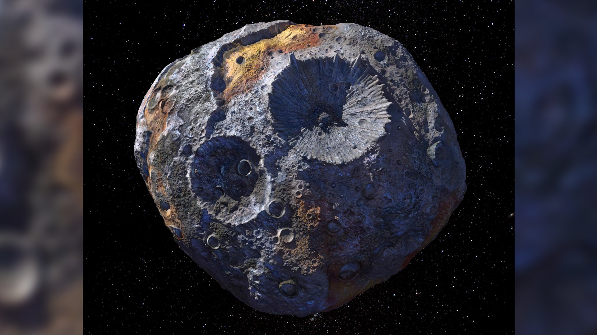

You can enter your weight in any unit you wish.
On Psyche 16, 1 year there is equivalent to 5 years on planet Earth!
One of the most intriguing objects in the main asteroid belt, Psyche is a giant metal rich asteroid, about three times farther away from the Sun than is Earth. Psyche has an irregular, potato-like shape. If it were sliced in half horizontally at the equator – picture a squished oval – it would measure 173 miles (280 kilometers) across at its widest point and 144 miles (232 kilometers) long. Its surface area is 64,000 square miles (165,800 square kilometers).
Up until recently, the scientific consensus was that the asteroid Psyche consisted mostly of metal. The more recent data indicates that the asteroid is possibly a mix of metal and silicate, the same material found in glass and sand. The best analysis indicates that Psyche is likely made of a mixture of rock and metal, with metal composing 30% to 60% of its volume. The asteroid’s composition has been determined by radar observations and by the measurements of the asteroid’s thermal inertia (how quickly an object gains or re-radiates heat). By combining radar and optical observations, scientists generated a 3D model of Psyche that shows evidence of two craterlike depressions. It suggests that there is significant variation in the metal content and color of the asteroid over its surface. But until NASA's Psyche mission sees the asteroid Psyche up close for the first time, we will not know what it actually looks like. Scientists think Psyche may consist of significant amounts of metal from the core of a planetesimal, one of the building blocks of our solar system. The asteroid is most likely a survivor of multiple violent hit-and-run collisions, common when the solar system was forming.
Thus, Psyche may be able to tell us how Earth’s core and the cores of the other rocky, or terrestrial, planets came to be. Psyche orbits the Sun between Mars and Jupiter at a distance ranging from 235 million to 309 million miles (378 million to 497 million kilometers) from the Sun. That’s 2.5 to 3.3 Astronomical Units (AU), with 1 AU being the distance between Earth and the Sun. Psyche takes about five Earth years to complete one orbit of the Sun, but it takes just over four hours to rotate once on its axis (a Psyche “day”).
The goal of NASA's exploration mission of Psyche 16 is to determine whether the asteroid is indeed the core of a planetesimal, that being, like the core of our planet earth.
All of the above information is an excerpt from the official NASA website for the Psyche16 mission.
*Disclaimer: The assumptions, findings, calculations, and conclusions expressed and described in this report and its exhibits were developed by undergraduate engineering students who are not licensed professional engineers. This report was prepared as an academic exercise as partial fulfillment of the College of Engineering Senior Design 4910 course. No part of this report should be used for planning, budgeting, construction, or fiscal related decisions without a complete review and written endorsement from an independent, qualified, and licensed engineer who is willing and able to become the engineer of record for all aspects of the study, calculations, findings, recommendations, and the project. A complete copy of this report was provided to the client without any financial reimbursement to its authors or the University of Georgia. The client may keep one copy of the report and is hereby given permission to copy and share the report as their needs dictate; however, a copy of this disclaimer shall accompany all copies made. By the acceptance of and/or use of this report and the exhibits hereto, the client and all reviewer of the content included herein shall indemnify and hold harmless the University of Georgia, College of Engineering, University employees, and the authors of this report from any and all liability, of whatsoever nature, that may result from such review, acceptance, or use.
More information about Psyche 16 and the mission can be found here! 